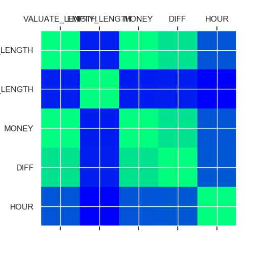
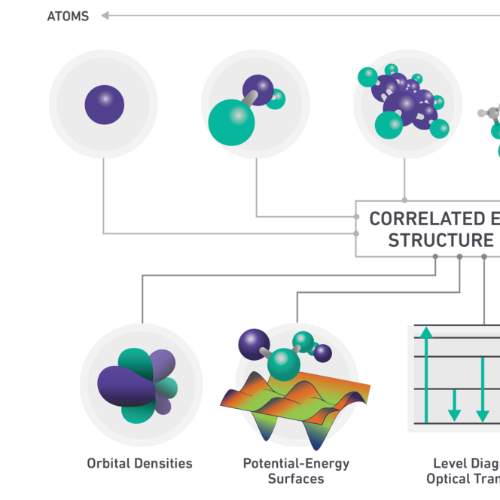

|
Louis Li
I graduated from the University of Manchester with a major in automatic
control (QS Rank 27), and during my academic career, I achieved numerous
accomplishments, including publishing 4 international papers and filing
for 13 invention patents.
With 9 years of experience in algorithm engineering and 3 years of experience
leading algorithm teams, I excel in image algorithms and combinatorial
optimization algorithms.
Email
/
Github
/
Website
/
WCA
/
Lab
|

|
|
Research
My research interests include exciting topics such as Diffusion, NerF,
and AIGC. In the future, I hope to apply my skills and knowledge in emerging
industries like blockchain, gaming, and e-commerce.
|
|
|
An XGBoost-based Electric Vehicle Battery Consumption Prediction Model
Yexing Li
,
Xinchao
,
Tao Ma
,
Yusen Zhang
ICPICS
, 2021
This paper focuses on predicting the State of Charge (SOC) for electric
vehicle batteries, which is crucial for efficient energy management. Accurate
estimation of SOC helps optimize charging and discharging control, driving
performance, and battery service life. The paper proposes a method that
uses principal component analysis for dimensionality reduction and the
XGBoost algorithm to build an SOC prediction model based on battery terminal
voltage, discharge current, and temperature. The model considers the complex
internal structure of the battery to improve prediction accuracy.
|
|
|
20201029 A Method of Power Supply Time Period Division Based on Optimal
Division Method
Yexing Li
,
Xinchao
,
Tao Ma
,
Yusen Zhang
CIYCEE
, 2020
This paper presents a method for dividing peak-valley periods and designing
orderly charging strategies to ease pressure on the power grid. The approach
uses optimal division, considers power supply stability and user satisfaction,
and employs a Bi-level programming model with a genetic algorithm to generate
a reasonable power supply plan. Experimental results indicate that this
approach offers benefits such as peak-shaving, valley-filling, and load
smoothing for the state grid company.
|
|
|
An Information Fusion Charging Optimization Model
Yexing Li
,
Xinchao
,
Tao Ma
,
Yusen Zhang
CIYCEE
, 2020
This paper proposes a multi-in-one orderly charging model that integrates
vehicle, pile, road network, and power grid information to optimize vehicle
charging and relieve traffic congestion. The model addresses real-time
changes in charging and grid load information, incorporating location,
battery, and SOC data as well as charging station capacity and queue size.
By leveraging road network information, the model calculates optimal station
locations and shortest routes for each vehicle, optimizing allocation during
peak hours and improving overall efficiency. This promising solution offers
a path to more efficient and organized vehicle charging.
|
|
|
Visual Scene Reconstruction Using a Bayesian Learning Framework
Sami Bourouis
,
Nizar Bouguila
,
Yexing Li
,
Muhammad Azam
ICISP
, 2018
This paper introduces a new method for modeling and reconstructing visual
data using Bayesian density estimation. The method is based on mixtures
of scaled Dirichlet distributions, which allows for parameter estimation,
model selection, and accounting for uncertainty. Three key issues related
to Bayesian mixture learning are addressed, including the choice of prior
distributions, parameter estimation, and component selection. The paper
also presents a principled algorithm for using scaled Dirichlet mixtures.
The method is tested on a real-life visual scene reconstruction task.
|
|

|
CN113869550A Taxi Scheduling Method Based On Grid Division And Graph
Analysis
Yexing Li,
Han Mengfei, Guo Jianguo, Xiao Mengmeng, Sun Hao
|
|
|
CN215416686U Application System Of Face Recognition In Bus OD Big
Data
Wang Quanjun,
Yexing Li,
Zhao Bo, Wang Jianjun, Zhang Haipeng, Zuo Haiwang
|

|
CN113505963A Construction System Of Electrical Characteristic Block
Yexing Li,
Hou Lei, Qi Tianxing, Deng Wei, Jiang Yue, Liu Hao, Wang Baocheng,Zhao
Xinchao
|
|
|
CN113487131A A Station Network Interaction Method Based On Charging
Demand
And Energy Storage Adjustment
Yexing Li,
Hou Lei, Chang Zheng, Ma Tao, Liu Yang, Tang Fan, Wang Baocheng, Zhao
Xinchao
|
|

|
CN113479077A A Kind Of Wireless Charging Method Based On Quantum
Battery
Yexing Li,
Hou Lei, Li Jin, Qi Tianxing, Wang Yixiao, Chen Bobo, Chen Yunhui, Zhang
Yanfeng, Liu Ruiying,Wang Baocheng
|

|
CN113306421A Method For Realizing Energy Spatio-Temporal
Optimization
Based On Charging Equipment And AGV
Yexing Li,
Hou Lei, Ma Tao, Wang Yixiao, Pan Jun, Chen Yunhui, Cao Lingjie, Ren
Tianyu,Wang
Baocheng
|

|
CN112434844A New Open And Expand Method Based On Convex Hull
Calculation
And Genetic Algorithm Sorting Line Network
Yexing Li,
Qu Hua, Zhao Xinchao, Wang Honggang, Sun Hao, Pu Xiuxia
|

|
CN112365050A Line Network Revocation, Truncation And Splitting
Method
Based On Partial Passenger Flow Rate Evaluation Index
Yexing Li,
Qu Hua, Zhao Xinchao, Wang Honggang, Sun Hao, Pu Xiuxia
|

|
CN112418612A A Kind Of Power Supply Time Segment Division And
Optimization
Method Based On Optimal Division Method
Yexing Li,
Ma Tao, Gao Shan,Zhao Xinchao, Liu Zhe, Yang Tiankuo, Liu Yazhou, Zhang
Yusen
|

|
CN112418610A Charging Optimization Method Based On Fusion Of SOC
Information
And Road Network Information
Yexing Li,
Ma Tao, Gao Shan,Zhao Xinchao, Liu Zhe, Yang Tiankuo, Liu Yazhou, Zhang
Yusen
|

|
CN112327168A A Kind Of Prediction Model Of Battery Consumption Of
Electric
Vehicle Based On Xgboost
Yexing Li,
Ma Tao, Gao Shan,, Zhao Xinchao, Liu Zhe, Yang Tiankuo, Liu Yazhou,
Zhang
Yusen
|

|
CN111881843A A Kind Of Statistical Method Of Taxi Passenger Capacity
Based
On Portrait Detection
Li Yexing,
Qu Hua, Xing Lijun, Sun Hao, Han Mengfei, Li Linzhong
|

|
CN110851741A Taxi Passenger Carrying Hotspot Identification And
Recommendation
Algorithm
Yexing Li,
Guo Jianguo, Yan Lei, Sun Hao, Xing Lijun, Han Mengfei
|
|